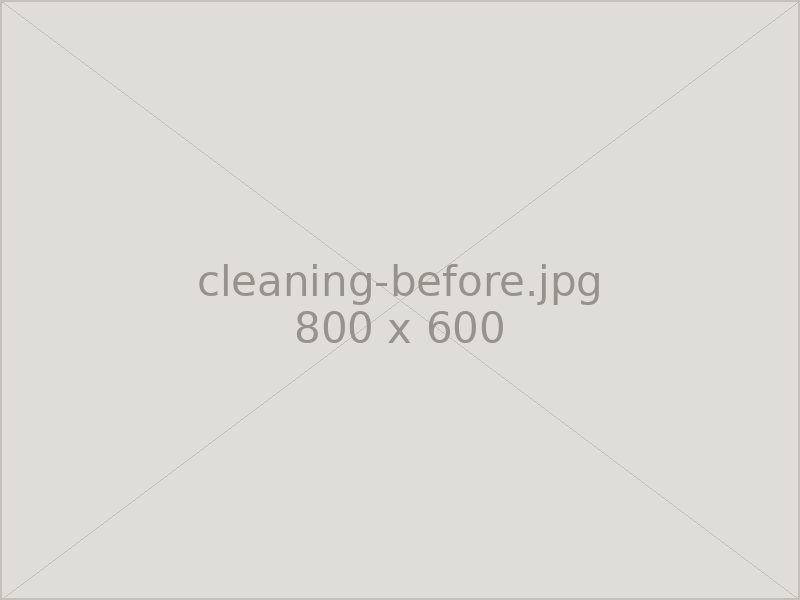
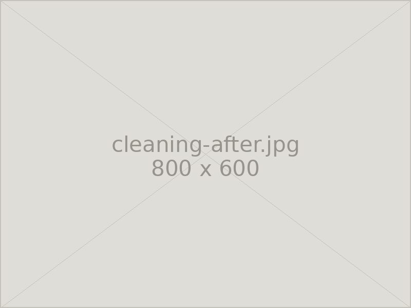

Cleaning
クリーニング
専門技術による洗浄でお墓を美しく整えます。ご自身では落としきれない汚れも、石を傷めない方法で丁寧に落とします。
お墓の汚れについて
お墓は屋外に建っているため、年月とともに雨水の跡やコケ、カビ、水垢などの汚れが積み重なっていきます。とくに日当たりの悪い場所や樹木の近くでは、黒ずみや緑色のコケが目立つようになります。
これらの汚れは、水をかけてこするだけでは落ちません。かといって、市販の強い洗剤や金属たわしを使うと、石の表面の艶を削り取ってしまい、かえって汚れが染み込みやすい状態になってしまいます。
当店では、石の種類と汚れの状態に合わせた方法で洗浄いたします。石の表面を傷めずに汚れだけを取り除き、本来の艶を取り戻します。
洗浄の効果


※ 汚れの種類や石の状態によって、落ちる度合いは異なります。
承っている作業
Menu 01
墓石全体の洗浄
竿石から外柵まで、お墓全体の汚れを洗い落とします。手の届きにくい石の裏側や隙間も丁寧に清掃します。
Menu 02
コケ・カビの除去
石にこびりついたコケやカビを取り除きます。再発しにくいよう、根の部分まで丁寧に処理します。
Menu 03
彫刻文字の色入れ直し
色あせたり剥がれたりした文字のペイントを入れ直します。洗浄とあわせて行うと、見違えるほど印象が変わります。
Menu 04
敷地内の清掃・除草
区画内の除草、玉砂利の洗浄・入れ替え、線香皿や花立の清掃なども承ります。
ご依頼の流れ
- Step 01お問い合わせお電話またはメールで、墓地の場所とお墓の状態をお知らせください。
- Step 02現地の確認・お見積りお墓を拝見し、汚れの状態を確認したうえでお見積りをお出しします。
- Step 03洗浄作業石の種類と汚れに合わせた方法で洗浄します。立ち会いは不要です。
- Step 04ご報告作業後の写真をお送りし、仕上がりをご確認いただきます。
※ お見積り・現地調査は無料です。遠方の墓地の場合は交通費を頂戴することがあります。
Contact
お気軽にご相談ください
お見積り・ご相談は無料です。まずはお電話でお聞かせください。
営業時間 8:00〜17:00 ／ 定休日 毎月14・15日、土日
FAX 03-3333-8452